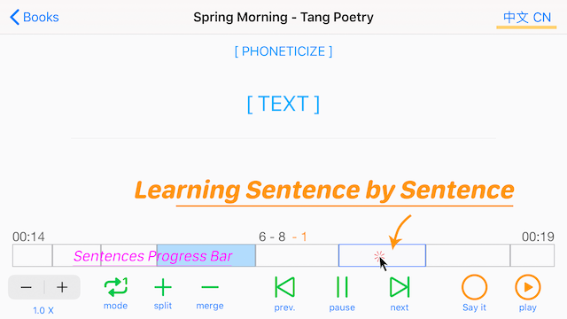

With just an audio file and only ONE tap, You Can Do This.
Features:
- Support for learning 61 languages: British English, American English, German, French, Spanish, Japanese, Korean, Mandarin Chinese, Cantonese Chinese, etc.
- 2 learning modes: Auto Sentence-by-Sentence mode or Normal mode.
- Easy to use. . Simply put the audio recording you want to learn, for example, your textbook recording, on your iPad, iPhone or iCloud Drive. You are ready to learn it Sentence by Sentence!
- In sentence-by-sentence mode . Voice recognition is supported, so no more script files such as .txt or .lrc are needed.
- Support headphone playback control and background playback[iOS only]. Press twice, play the next sentence.
. All buttons are highlighted in blue.
. The original Sentences Progress Bar makes it more convenient to learn sentence by sentence. Tap to learn!
. You can also see the Phonetic symbols or Pinyin of every sentence, if you are learning American English, English or Chinese.
. Automatically check every sentence you said, if correct:
A. Save your voice automatically.
B. Color the corresponding sentence blue on the sentences progress bar.
. All text menu options provided by Apple can use [long press a word display]. For example, use a third-party voice dictionary to query words and their pronunciation.
Press 3 times, play the previous sentence.
Note: Requires iOS 13.0 or higher macOS 10.15